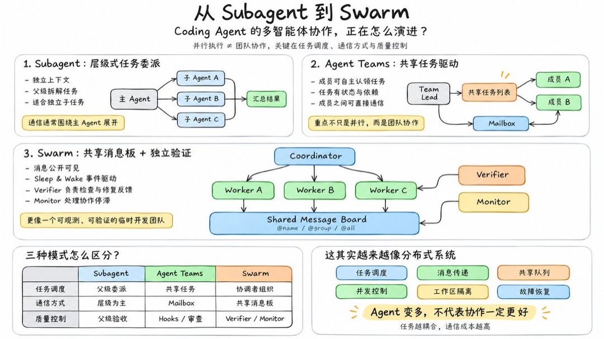
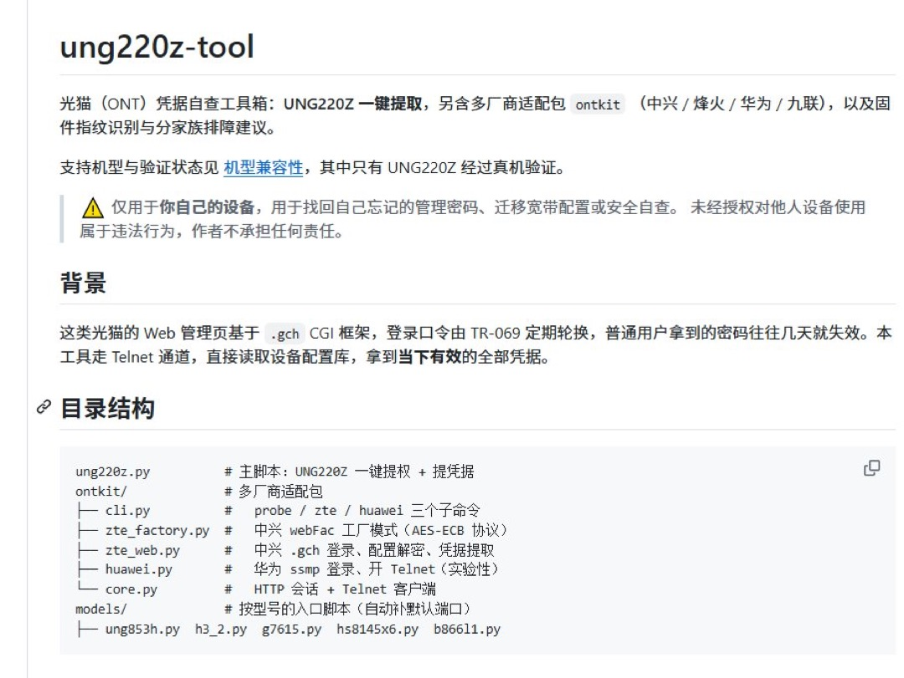
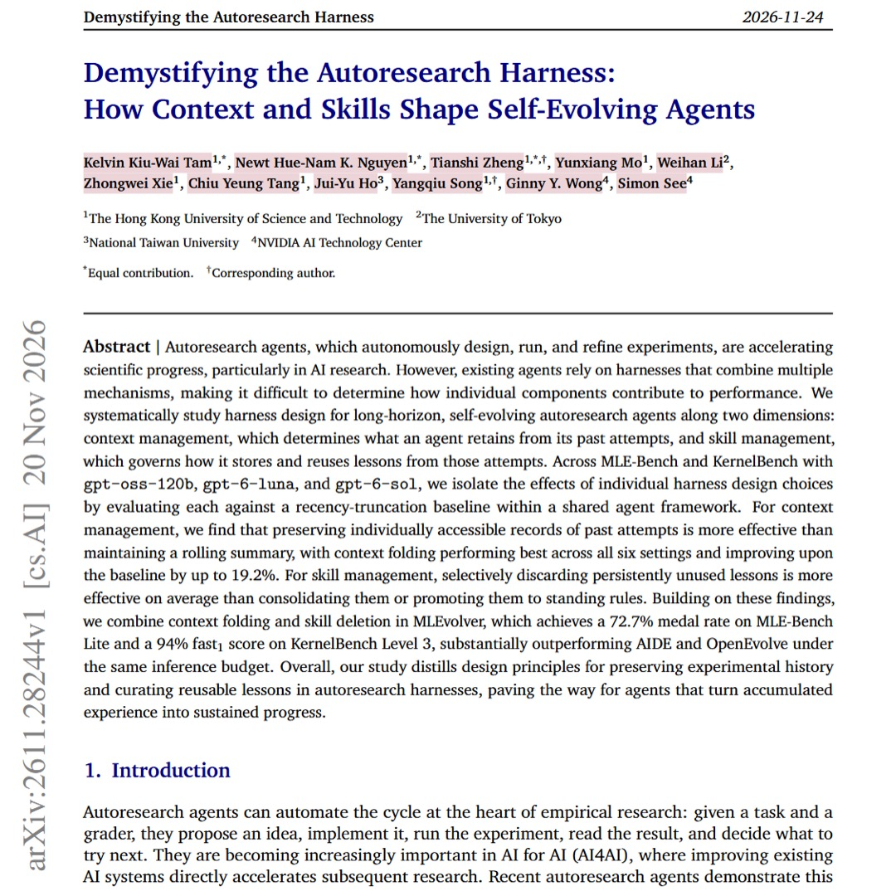

本期速览
01 多 Agent 协作三路线对比
02 LangChain Agent 结果闭环
04 SQLite 核心代码测试全覆盖
05 Magpie 统一 MCP 授权与加载
06 MLEvolver 用摘要与删减管理记忆
01｜多 Agent 协作三路线对比
来源（X） · @meow2149 · 2026-11-26 14:56
同时跑起十个 Agent，和让十个 Agent 真正组成一个团队，其实是两件完全不同的事。
最近研究 Google Antigravity 时，发现它内置了一个很有意思的 /swarm 功能，可以让多个 Agent 像开发团队一样分工、通信、并行执行并交叉验证。
把 Codex 的 Subagents、Claude Code 的 Agent Teams 和 Antigravity 的 Swarm 放在一起看，三者都在解决多 Agent 协作，但在任务调度、通信机制和生命周期管理上，走出了三条不同的路线。
1. Codex Subagents：层级式任务委派
Codex 的多 Agent 协作以经典的层级式委派为基础。主 Agent 负责理解需求、拆解任务，创建拥有独立上下文的子 Agent，再向它们下发任务、追加指令、等待结果，最后汇总交付。
在 Multi-Agent V1 中，这套协作主要靠几个核心工具串联：
- spawn_agent 创建子 Agent
- send_input 向已有 Agent 发送指令
- wait_agent 等待执行结果
- resume_agent / close_agent 恢复或关闭 Agent
不过 Codex 并没有停留在单纯的父子委派。最新公开源码中的 Multi-Agent V2 已经开始把消息传递和任务调度进一步解耦，并通过层级化的 Task Path 来标识不同 Agent。
比如 send_message 只负责投递消息，不会直接开启新的执行轮次；followup_task 则负责向已有 Agent 分配后续任务，并在必要时重新启动执行。同时，V2 还引入了 Mailbox 消息等待、Agent 列表查询和执行中断等能力（具体工具是否可用取决于模型和运行时配置）。
此外，Codex 支持为不同角色配置模型、推理强度和沙箱策略。你可以让成本更低的模型负责代码搜索，把复杂逻辑和代码审查交给更强的模型。整体看，它正在从父子任务委派扩展到更灵活的通信与生命周期管理，很适合代码库探索、并行审查以及相对独立的子任务。
2. Claude Code Agent Teams：共享任务与成员通信
Claude Code 的 Agent Teams 在独立会话之上，引入了两个关键组件——Shared Task List（共享任务列表）和 Mailbox（收件箱）。
整个团队由四个核心部分组成：
- Team Lead 负责组建团队、拆解任务和汇总结果
- Teammates 拥有独立会话和上下文的团队成员
- Task List 维护共享任务的状态、归属和依赖关系
- Mailbox 负责成员之间的消息传递
启用 Task 系列工具后，成员完成当前任务，可以主动去共享列表里认领尚未分配、且没有依赖阻塞的新任务。底层通过 File Locking（文件锁）处理并发认领时的竞争，前置任务一完成，下游依赖也会自动解除阻塞。
通信机制同样很有意思。Claude Code 会为每个成员维护一个独立的 JSON 收件箱：
~/.claude/teams/{team-name}/inboxes/{agent-name}.json
成员能通过 SendMessage 直接向其他 Agent 发消息，不用所有信息都经过 Team Lead 转述。比如前端 Agent 发现后端接口缺少字段，直接找后端 Agent 协商修改就行。配合 TeammateIdle、TaskCreated、TaskCompleted 等 Hooks，开发者还能把测试和静态检查接入任务生命周期，不达标时直接阻止任务完成。
新版 Claude Code 中，普通具名 Subagent 其实也可以直接通信；部分较新模型默认不提供 Task 系列工具，团队成员会直接通过消息协调工作。所以 Agent Teams 的核心不只是让 Agent 能互相发消息，而是把独立会话、成员管理、任务状态和质量控制整合成了一套完整的协作机制。
3. Antigravity Swarm：共享消息板与独立验证
Antigravity 的 /swarm 采用了另一种思路。启动 Swarm 后，当前会话变成 Coordinator（协调者），负责划定任务边界、创建 Worker、分配职责和验收结果，具体技术工作交给团队成员执行。
每个 Worker 同样有独立会话和上下文，但和 Claude Code 的独立 Mailbox 不同，Swarm 使用的是一个公开的 Shared Message Board（共享消息板）。任务范围、禁止修改的内容、完成标准，以及成员间的提问、代码变更摘要和测试结果，都会按顺序发布在同一个消息板上。成员之间通过 @name、@group、@all 公开交流，没有私下传话，整个协作过程对团队和用户完全可见。
除此之外，Swarm 还有三个设计非常值得关注：
Sleep & Wake（事件驱动的休眠与唤醒）
Worker 没有任务或正在等回复时可以进入休眠，期间不消耗模型 Token；当其他成员通过 @ 提及它时，再自动唤醒继续执行。这避免了 Agent 为了等消息而反复空转调用模型。
Verifier（独立验证机制）
Coordinator 通常会按每两到四个 Worker 配一个 Verifier 的比例，专门检查代码变更、运行测试，并把发现的问题反馈给对应 Worker 修复。Worker 和 Verifier 还可以使用不同模型，实现跨模型的代码审查与验证。
Monitor（协作停滞监控）
当整个团队都进入等待状态、但任务还没完成时，Monitor 会主动介入发消息唤醒相关成员，尝试推动任务继续执行。
工作区方面，Swarm 默认共享工作区，也可以给多个 Worker 分配独立的仓库工作副本，减少并行改代码产生的冲突。它甚至提供了 Graph 视图，可以观察 Agent 之间的通信关系，并回放整个团队的消息交互过程。过去我们只能看到 Agent 最终交付了什么，现在连它们如何讨论、协商、验证和修复问题，也逐渐变得可观测。
4. 三种架构的核心差异
对比下来，三者的设计重心非常清晰：
- Codex Subagents 偏重层级化任务委派、子 Agent 生命周期管理和消息传递
- Claude Code Agent Teams 偏重共享任务状态、自主任务认领和团队成员通信
- Antigravity Swarm 偏重共享消息板、事件驱动调度、独立验证和停滞监控
三者之间并不存在严格的迭代替代关系，Swarm 也不是彻底去中心化的架构，依然需要 Coordinator 负责整体协调。真正值得关注的，是它们如何组织任务、传递信息，以及如何判断整个团队已经完成了工作。
Antigravity 自己也同时保留了 Subagents、Swarm、Boost 和 Teamwork 等不同模式，分别用于独立子任务、并行开发、复杂问题的反复验证和长周期项目。不同类型的任务需要不同的 Agent 组织方式，并不是所有事都值得拉起一个蜂群。
5. 多 Agent 协作正在遇到分布式系统的经典问题
上一篇拆解 T3 Code 和 Orca 时，我把 Agent 编排系统类比成了操作系统。而从 Subagent、Agent Teams 一路看到 Swarm，会发现多 Agent 协作越来越频繁地触及分布式系统里的经典设计：
- Subagent Delegation → 层级式任务调度
- Mailbox → 点对点消息传递
- Shared Message Board → 共享消息日志
- Shared Task List → 共享任务队列
- File Locking → 并发控制
- Sleep & Wake → 事件驱动调度
- Git Worktree → 工作空间隔离
- Verifier → 独立质量验证
- Monitor → 系统活性监控
随着 Agent 数量增加，通信开销、资源竞争、状态一致性、任务依赖和故障恢复这些老问题，也会逐一冒出来。
任务认领加了锁，不代表代码修改实现了互斥；拥有独立的上下文窗口，不代表拥有独立的文件系统；多个 Worker 都汇报任务完成，也不代表集成后的代码能通过测试。一旦任务依赖没正确解除，或者所有 Agent 都在互相等待回复，整个团队甚至可能直接陷入协作停滞。
这些难题现在都还没被彻底解决，Claude Code Agent Teams 目前仍处于 Experimental 阶段，Antigravity Swarm 也还处在 Preview 阶段。而且多 Agent 从来不是越多越好，面对高度耦合的任务，盲目增加 Agent 反而会带来更高的通信开销、重复推理和 Token 消耗。
我越来越觉得，除了模型本身的能力和 Agent Harness 的打磨，如何组织多个拥有独立上下文、工具和推理能力的 Agent，并以可控成本实现可靠协作，将会成为 Coding Agent 非常关键的竞争方向。
毕竟，让十个 Agent 同时写代码，和让十个 Agent 共同交付一个完整的项目，是两件完全不同的事。

02｜LangChain Agent 结果闭环
来源（X） · @Xudong07452910 · 2026-11-26 08:25
agent 上线越久，trace 越多。可很多团队存下了所有执行记录，还是很难回答 agent 到底有没有变好。
文章的思路是把 trace、真实结果和自动分析放在一起，跑成一个持续改进的闭环。
我觉得最关键的是把 trace 和结果分开看。trace 记录 agent 做了什么，结果才说明它做得怎么样。coding agent 写完代码，PR 最后有没有被合并，往往比过程本身更能说明问题。
具体做法上，他们用更便宜的小模型给线上 trace 打分、做语义搜索，把有问题的记录筛出来。反复出现的失败会被自动归类、定位原因、提修复 PR，并且先跑一遍评测。改 harness 解决不了的，再用表现好的轨迹去微调模型。
我更关心的是结果信号本身靠不靠得住。用户点踩、LLM 打分、PR 合并都各有偏差，要是反馈歪了，自动改进也会跟着把错误放大。
不过这是 LangSmith 的产品文，微调效果的数字来自他们的内部 benchmark，可以先参考着看。不过「trace + 结果 → 筛选 → 修复 → 训练」这条闭环，对任何在做 agent 的团队都适用。尤其是存数据的时候，记得把结果信号一起记下来。
📎 https://www.langchain.com/blog/the-agent-lake
📎 https://www.langchain.com/blog/the-agent-lake
03｜ung220z-tool 读取光猫配置
来源（X） · @0xGky · 2026-11-25 23:09
GitHub 上那个狂揽 4700 Stars 的开源项目 ung220z-tool，就是奔着治光猫管理密码忘个精光、宽带配置死活迁不走这些糟心事儿去的。
它能把光猫配置读个底儿掉，超级管理员账号、Telnet 密码、PPPoE 宽带账号，外加 WiFi 密钥，统统给你一锅端出来！
不光是九联 UNG220Z，连中兴、烽火、华为等一堆厂商的适配工具都给你备齐了，固件识别跟故障排查也一并安排上。
纯纯的 Python 开发，压根不用你装什么乱七八糟的第三方依赖。
爱死磕光猫、桥接模式还有软路由的朋友，赶紧收进收藏夹！
🔗https://github.com/Hut-hzf/ung220z-tool

04｜SQLite 核心代码测试全覆盖
来源（X） · @zujingpgg · 2026-11-25 18:24
最震撼的不是技术有多炫，而是一个几乎运行在全球每台智能手机上的数据库，背后只有一个很小的核心团队，却靠近乎偏执的测试纪律，稳定运行了二十多年。
Hipp 曾花整整一年，每周工作约 60 小时，把 SQLite 核心代码的测试覆盖率做到 100%，甚至达到比普通分支覆盖更严格的 MC/DC 标准。
放在今天 AI Agent 和 Vibe Coding 盛行的背景下，这篇访谈更值得重读。
当生成几千行代码变得越来越容易，真正稀缺的反而是验证代码正确性的能力。
很多人还在研究怎么让 AI 写得更快，却没想过怎么让 AI 改完几千行代码之后，自己还敢放心上线。
希望兄弟们别错过这篇。
https://corecursive.com/066-sqlite-with-richard-hipp/
05｜Magpie 统一 MCP 授权与加载
来源（X） · @yetone · 2026-11-26 17:21
1. 统一 MCP 服务的登录授权，比如 Notion, Linear 这种需要登录授权的 MCP 服务，只需要在 Magpie 登录一次即可在任意 Agent 无缝切换使用，不需要每切换一个 Agent 都需要重新登录一遍
2. 统一维护 MCP 服务的版本更新，以及新的 MCP 服务的安装与卸载
3. 借助 Magpie MCP router 实现完美的 MCP 工具的按需加载以做到极大的上下文空间节省，因为某些先进的 Agent 竟然还不支持 MCP 工具的按需加载，比如 agy ，借助 Magpie MCP router 就完美解决
4. Magpie MCP router 除了能够实现 MCP 工具的按需加载之外，还能够在此基础上实现 dynamic workflow 编排的能力，进一步大力节省上下文空间
引用内容
solider1394 @solider1394
06｜MLEvolver 用摘要与删减管理记忆
来源（X） · @Xudong07452910 · 2026-11-26 11:32
港科大和 NVIDIA 等团队的这篇论文把问题拆开做了控制变量，一次只换一个组件，在 MLE-Bench（Kaggle 比赛）和 KernelBench（CUDA kernel 优化）上测。
两个结论是非常值得去学习的。
1. 历史记录要能单独翻回去看。把每次尝试各自压成一份可展开的摘要，比把所有历史滚动总结成一段更好，6 组设置里都是最优，最多比基线提升 19.2%。滚动总结越往后，早期实验的细节丢得越多。
2. 经验库要做减法。长期用不上的经验直接删掉，平均效果比合并相似经验、或升级成固定规则都好。经验攒得越多，agent 并不会越聪明，反而更容易被噪声带偏。
两者组合成 MLEvolver，同样推理预算下明显超过 AIDE 和 OpenEvolve。
我的理解是，自进化 agent 拼的还是记忆管理，记住哪些、忘掉哪些、需要时能不能找回来。做长时任务 agent 的同学可以收藏阅读。
📎 arXiv: https://arxiv.org/abs/2611.28244

07｜Agent Loop 负责夜间 CI
来源（X） · @xuanwo · 2026-11-26 16:37
- 每个 PR / Commit 只运行非常轻量的编译和 Lint
- 重型的集成测试都放在 Nightly CI 中运行
- 独立的 Agent Loop 负责持续集成和修复
未来已来，当年 PingCAP 的多维立体 CI Pipeline 到底看到了多远🫡